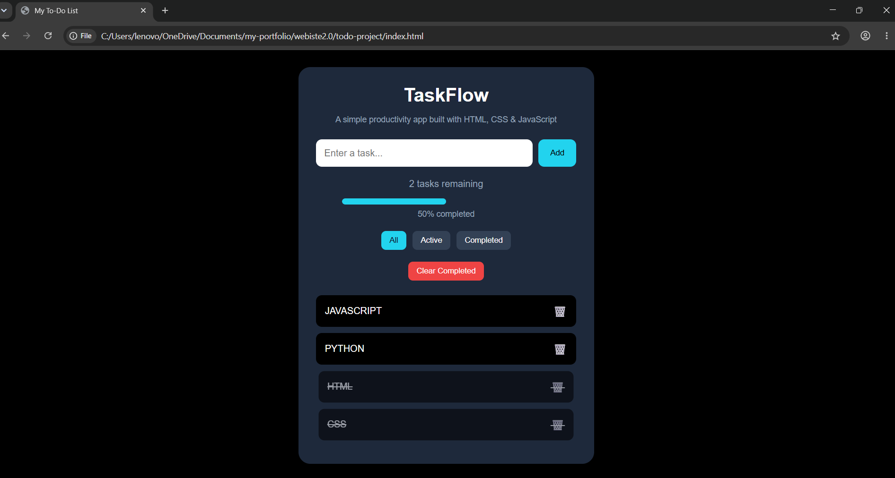
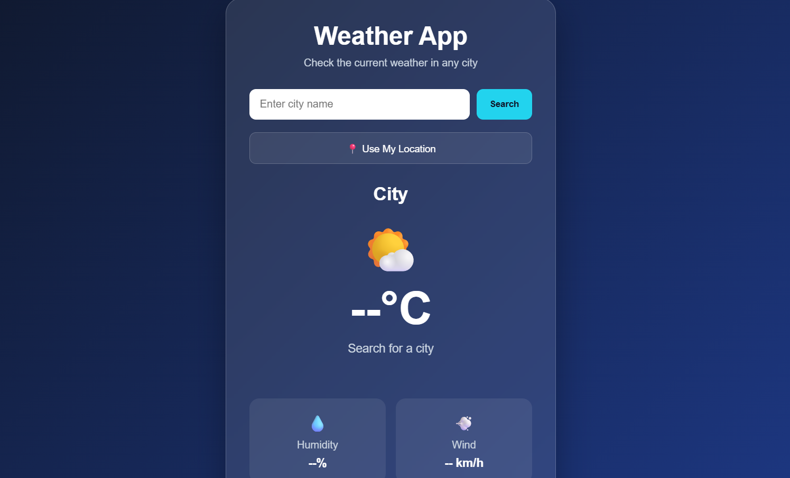
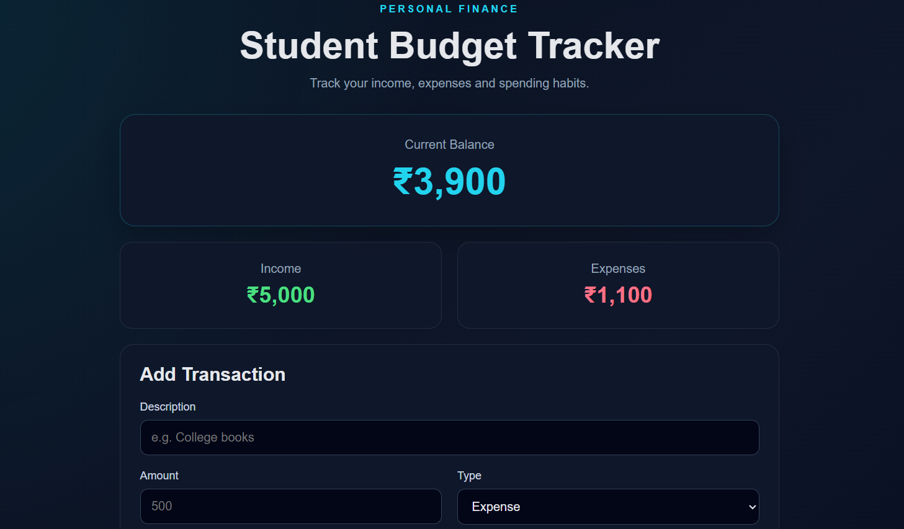
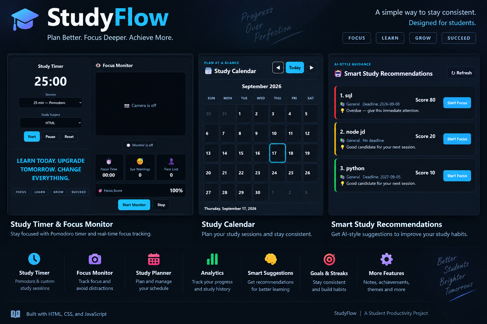

MY WORK
My Projects
Here are some projects I have built while learning web development and programming.

TaskFlow
A simple and responsive to-do app that lets users add, complete, filter, and clear everyday tasks while tracking their progress.

Weather App
Search any city for current weather, humidity, wind speed, and a five-day forecast using a live weather API.

Student Budget Tracker
A personal finance web app for tracking income, expenses, categories and spending habits with data saved in the browser.

StudyFlow
A student productivity dashboard for managing subjects, assignments, study sessions with Pomodoro timer, focus monitoring, study streaks, smart recommendations, exam tracking, and daily planning — all with data saved in the browser.